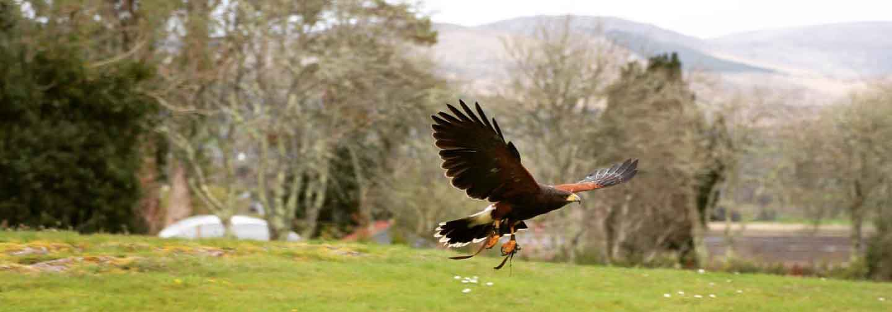

Kastrel Falconry provides group and private falcon walks, you will set off around the beauty of killarney's lakelands to fly a falcon/or team of falcons and experience the unforgettable moment when a falcon swoops down from a tree to land on the your gloved fist. Each hawk walk is an experience with a falconer and falcon, or team of falcons, all to yourself while spectators may accompany you at your invitation. All ages and abilities can be catered for with reduced rates for families and groups. Pre-booking is essential for this experience of a lifetime. A truly amazing experience. Kastrel falconry are very professional and excited about their craft. They take their time and make you feel very comfortable around these magnificent birds of prey. It is evident that they have dedicated a lot of time, effort and love to mastering these skills, their enthusiasm is infectious. For anyone looking for an unforgettable experience seeing these magnificent birds up close and personal performing amazing aerial acrobatics. Contact the team today.
Falcons are birds of prey in the genus Falco, which includes about 40 species. Falcons are widely distributed on all continents of the world except Antarctica, though closely related raptors did occur there in the Eocene. Adult falcons have thin, tapered wings, which enable them to fly at high speed and change direction rapidly. Fledgling falcons, in their first year of flying, have longer flight feathers, which make their configuration more like that of a general-purpose bird such as a broad wing. This makes flying easier while learning the exceptional skills required to be effective hunters as adults. The falcons are the largest genus in the Falconinae subfamily of Falconidae, which itself also includes another subfamily comprising caracaras and a few other species. All these birds kill with their beaks, using a tomial "tooth" on the side of their beaks—unlike the hawks, eagles, and other birds of prey in the Accipitridae, which use their feet. The largest falcon is the gyrfalcon at up to 65 cm in length. The smallest falcon species is the Pygmy falcon which measures just 20 cm. As with hawks and owls, falcons exhibit sexual dimorphism, with the females typically larger than the males, thus allowing a wider range of prey species. Some small falcons with long, narrow wings are called "hobbies" and some which hover while hunting are called "kestrels". As is the case with many birds of prey, falcons have exceptional powers of vision; the visual acuity of one species has been measured at 2.6 times that of a normal human. Peregrine falcons have been recorded diving at speeds of 320 km/h (200 mph), making them the fastest-moving creatures on Earth; the fastest recorded dive attained a vertical speed of 390 km/h (240 mph).
| Monday - Friday | Saturday | Sunday | |
|---|---|---|---|
| Open | 09:00 | 10:00 | Closed |
| Close | 18:00 | 17:00 |